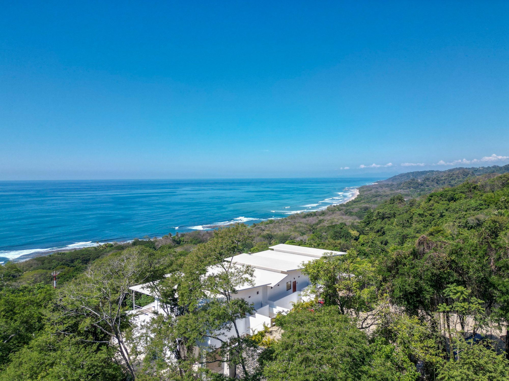
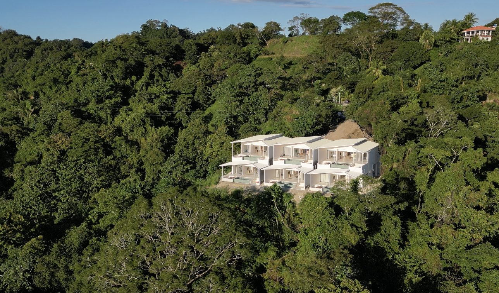

Santa Teresa n'est pas qu'une destination balnéaire prisée des surfeurs du monde entier. C'est un écosystème vivant, pulsant, où la jungle tropicale rencontre l'océan Pacifique dans une symphonie de biodiversité que peu de destinations peuvent égaler. À chaque coin de rue, dans chaque arbre, au détour de chaque sentier, la faune costaricienne déploie ses merveilles.
Les Singes : Témoins de la Jungle
Santa Teresa abrite trois espèces de singes qui incarnent à eux seuls toute la richesse de la forêt tropicale. Les singes hurleurs sont impossible à oublier une fois qu'on les a entendu. Leurs cris terrifiants et préhistoriques — un rugissement qui semble venir du cœur de la terre — résonnent à travers la canopée au lever et au coucher du soleil. Contrairement à leur réputation, ce ne sont pas des créatures agressives, simplement territoriales. Se réveiller au bruit de leurs appels depuis votre villa privée à Les Roches, c'est se sentir connecté à quelque chose de primordial.
Les singes capucins sont les comedians de la jungle — curieux, espièges, souvent très proches des habitations. Vous les croiserez probablement lors de vos explorations de Santa Teresa, se suspendu par la queue, fouillant les arbres fruitiers avec une dextérité stupéfiante. Les singes araignées, plus rares et gracieux, se déplacent en acrobates à travers les plus hautes branches, leurs queue prenante opérant comme un cinquième membre. Leur silhouette filiformes les rend presque impossibles à distinguer de loin, mais une fois qu'on les aperçoit, on ne peut détacher le regard.

La Réserve Naturelle de Cabo Blanco
La Réserve Naturelle de Cabo Blanco est un incontournable pour qui souhaite s'immerger dans la faune sauvage. Ouverte mercredi à dimanche, de 8h à 16h, elle accueille les visiteurs pour seulement 12 dollars USD. C'est une visite que nous recommandons fortement aux hôtes de Les Roches.
Les Sentiers Essentiels
Deux sentiers principaux sillonnent la réserve. Le sentier Sueco, le plus long, serpente à travers la forêt primaire et les ravins côtiers, offrant des vues spectaculaires sur l'océan Pacifique et une opportunité premium d'apercevoir paresseux, aras, et autres créatures rares. Le sentier Danés, plus court et moins exigeant, mène à une plage vierge où les tortues marines viennent se reproduire pendant la saison.
Les Créatures à Écailles, Plumes et Fourrure
Au-delà des singes, Santa Teresa foisonne de vie. Les paresseux — trois doigts et deux doigts — se suspendent tranquillement dans la canopée, incarnant une philosophie de vie entièrement différente. Leurs mouvements ralentis et leurs sourires perpétuels ont inspiré une génération de voyageurs à reconsidérer leurs priorités.
Les aras rouges, avec leur plumage crimson et or, sont les joyaux ailés de la région. Ces perroquets intelligents et longévifs — pouvant vivre plus de 50 ans — forment des liens de couple permanents et planent majestueusement au-dessus des vallées de Santa Teresa, particulièrement visibles en début de matinée.

Les Reptiles et les Amphibiens
La région accueille également une collection impressionnante de reptiles. Les iguanas vertes, les couleuvres venimeuses, et diverses espèces d'amphibiens forment un écosystème délicatement équilibré. Marcher dans la jungle la nuit — une expérience fortement recommandée — offre des rencontres avec des créatures rarement vues à la lumière du jour, révélant un monde nocturne aussi riche que celui du jour.
Les meilleures heures pour observer la faune sont l'aube (5h30-8h) et le crépuscule (16h-17h30). Nous recommandons de réserver un guide naturaliste expérimenté qui saura vous montrer ce que vos yeux untrained manqueraient. Les bruits et les mouvements de la jungle révèlent des histoires invisibles au touriste pressé.
La Saison des Tortues Marines
De avril à septembre, les plages de Santa Teresa et ses alentours deviennent des lieux de reproduction pour plusieurs espèces de tortues marines. Assister à l'émergence des nouveau-nés — des centaines de minuscules tortues se précipitant vers l'océan — est une expérience primaire, presque spirituelle. Des organisations comme Projecte Último Refugio organisent des excursions nocturnes pour observer ce phénomène naturel.

Un Engagement pour la Conservation
À Les Roches, nous croyons fermement à la conservation responsable de ces merveilles. Chaque hôte est encouragé à respecter la distance avec la faune sauvage, à éviter les lumières artificielles pendant la saison des tortues, et à soutenir les initiatives locales de protection. Santa Teresa prospère parce que les générations actuelles et passées ont choisi de préserver plutôt que de détruire.
La faune et la nature ne sont pas des attractions à consommer. Ce sont des présences vivantes, conscientes, avec leurs propres agendas et nécessités. S'immerger dans la nature de Santa Teresa, c'est apprendre l'humilité — réaliser que nous ne sommes que des visiteurs dans un monde bien plus ancien et bien plus vaste que le nôtre.
Vivez l'Harmonie Naturelle à Les Roches
Séjournez dans l'une de nos six villas privées, position idéale pour explorer la biodiversité intacte de Santa Teresa. Réveille-vous au chant des oiseaux, dînez face à l'océan, et immergez-vous dans la nature comme jamais auparavant.
Réserver Votre Retraite